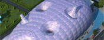
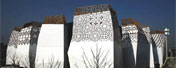

中国馆
展馆建筑外观以“东方之冠，鼎盛中华，天下粮仓，富庶百姓”的构思主题，表达中国文化的精神与气质。
日本馆

展馆爱称“紫蚕岛”，馆外覆盖超轻的发电膜，采用特殊环境技术，是一幢“像生命体那样会呼吸、对环境友好的建筑”。
美国馆
展馆外观如一只展开双翅的雄鹰， 欢迎远道而来的客人。展馆是未来美国城市的缩影，包括了清洁能源、绿色空间和屋顶花园等元素，通过多维模式和高科技手段，引领参观者在四个独特的展示空间踏上一段虚拟的美国之旅，讲述坚持不懈、创新以及社区建设的故事。
俄罗斯馆

展馆建筑既似花朵，又似“生命树”，12个“花瓣”形成塔楼，顶部的镂空图案则表现了俄罗斯各民族的装饰特色。